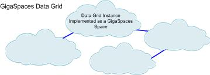
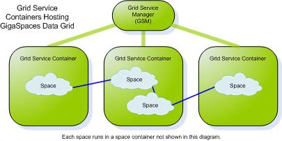
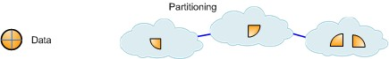

Section Summary: Explains the topologies and clustering mechanism of the GigaSpaces in-memory data grid (the Space)
Overview
Different applications might have different caching requirements. Some applications require on-demand loading from an external, slower data source, due to limited memory; others use the cache for read-mostly purposes; transactional applications need a cache that handles both write and read operations, maintains consistency and serves as the application's system of record.
In order to address these different requirements, GigaSpaces provides an in-memory data grid that is policy-driven. Most of the policies do not affect the actual application code, but rather affect the way each data grid instance interacts with other instances. The policies allow the data grid to be configured in almost any topology; In most cases you will find the common topologies that are provided out of the box sufficient for your requirements, but these can also be overridden to provide custom behaviors.
This section explains the most common topologies - replicated, partitioned and master-local.
GigaSpaces Data Grid - Basic Terms
- Space (data grid) instance - an independent data storage unit. The Space is comprised of all the space instances running on the network.

- Space - GigaSpaces data grid implementation. A distributed, shared, memory-based repository for objects. A space runs in a space container - this is usually transparent to the developer.
 - GigaSpaces Container (GSC) - a generic container that can run one or more processing units. A space instances usually runs within processing unit. The GSC is launched on each machine that participates in the space cluster, and hosts the space instances.
 - Replication - a relationship in which data is copied between two or more space instances, with the aim of having the same data in some or all of them.

- Synchronous replication - replication scheme in which space client applications are blocked until their changes are propagated to all peer spaces. This guarantees higher data consistency between space instances, at the expense of reduced performance since clients have to wait for the replication to complete before the operation is finished.
- Asynchronous replication - replication mode in which changes are propagated to peer space instances in the background, using separate thread(s) that the onces the are used to receive the write request from the clients. Applications clients do not have to wait for their changes to be propagated to other space instances. With asynchronous replication the client does not block until all the data has been replicated, and the space can optimize the replication by batching multiple updates into a single network call. Therefore this options performs better and allows for higher throughput. On the other hand, data is less consistent between space instances and takes longer to get propagated.
- Partitioning - new data or operations on data are routed to one of several space instances (partitions). Each space instance holds a subset of the data, with no overlap. Partitioning is done according to n routing field in the data object. Each object written to the space defines a routing field whose value is used to determine the partition to which the object will be sent. The space client side proxy guarantees that if two object have the same value set for the routing field they will end up in the same partition, regardless o how many partitions are running.
 - Topology - a specific configuration of space instances. For example, a replicated topology is a configuration in which all space instances replicate data between one another. In GigaSpaces, space topologies are defined by clustering policies (explained in the following section).
| Replication Configuration For more details on how to configure the replication mechanisms of the Space, please refer to this page in the Administrator's Guide. |
GigaSpaces Clustering Concepts
In GigaSpaces XAP, a cluster is a grouping of several space instances running in one or more containers. For an application trying to access data, the cluster appears as one logical resource (called a space), but in fact consists of several space instances which may be distributed across several physical machines. The space instances in the cluster are also called cluster members.
A cluster group is a logical collection of cluster members, which defines how these members interact. The only way to define relationships between clustered spaces in GigaSpaces, is to add them to a group and define policies. A cluster can contain several, possibly overlapping groups, each of which defines some relations between some cluster members - this provides great deal of flexibility in cluster configuration.
A GigaSpaces cluster group can have one or more of the following policies:
- Replication Policy - defines replication between two or more spaces in the cluster, and replication options such as synchronous/asynchronous and replication direction.
- Load Balancing Policy - because user requests are submitted to the entire cluster, there is a need to distribute the requests between cluster members. The load balancing policy defines an algorithm according to which requests are routed to different members. For example, in a replicated topology, requests are divided evenly between cluster members; in a partitioned topology they are routed according to the partitioning key.
- Failover Policy - defines what happens when a cluster member fails. Operations on the cluster member can be transparently routed to another member in the group, or to another cluster group.
A cluster schema is an XML file which defines a cluster - the cluster name, which spaces are included in the cluster, which groups are defined on them, and which policies are defined for each group. GigaSpaces provides predefined cluster schemas for all common cluster topologies. Each topology is a certain combination of replication, load balancing and failover policies.
Data Grid Topologies Supported Out of the Box
| Topology and Description | Common Use | Options |
|---|---|---|
| Replicated (view diagram) Two or more space instances with replication between them. |
Allowing two or more applications to work with their own dedicated data store, while working on the same data as the other applications. Also allows for load distribution between multiple space instances in read-intensive scenarios |
|
| Partitioned (view diagram) Data and operations are split between two or more space instances (partitions) according to a routing field defined in the data. An load balancing algorithm maps values of the routing field to a specific partition. |
Allows the In-Memory Data Grid to hold large volumes of data, even if it is larger than the memory of a single machine, by splitting the data across several partitions. |
|
| Master-Local (view diagram) Each space client has a lightweight, embedded cache, which is initially empty. Upon the first time data is read, it is loaded from a master space to the local cache (this is called lazy loading); the next time the same data is read, it is fetched quickly from the local cache. Later on data is either updated from the master or evicted from the cache. |
Boosting read performance for frequently used data. A useful rule of thumb is to use a local cache when over 80% of all operations are repetitive read operations. |
|
| Local-View (view diagram) Similar to master-local, except that data is pushed to the local cache. The application defines a criteria, using a space read template or an SQL query, and data matching the filter is streamed to the cache from the master space. |
Achieving maximal read performance for a predetermined subset of the data. |
|
{kind=link}
{kind=link}
{kind=link}
{kind=link}
 The topologies above are provided in the GigaSpaces product as predefined cluster schemas. The schema names are:
The topologies above are provided in the GigaSpaces product as predefined cluster schemas. The schema names are:
- Synchronous replication - sync-replicated
- Asynchronous replication - async-replicated
- Partitioned with backup - partitioned-sync2backup
The master-local and local-view topologies do not need their own schemas, because the local cache is defined on the client side.